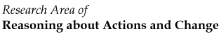

|  | |
London, England, January 7-9, 1998
Initially, the pages contain a (partial) summary of what was said in the discussions at the workshop itself. Authors were given a chance to revise the discussion summary before it went on-line. Then, starting February 1, additional contributions to the discussion are invited both from workshop participants and from everyone else.
| Page | Author/ Title /Bibcode | Full paper | Latest msg | |
|---|---|---|---|---|
| 1 |
Grigoris Antoniou, D. Billington, and M.J. Mahler Sceptical logic programming based default reasoning - Defeasible logic rehabilitated. c-fcs-98-1 |
[original] | [ 2.2 ] | |
| 20 |
Yves Moinard and Raymond Rolland Circumscriptions from what they cannot do (preliminary report). c-fcs-98-20 |
[revised] | [ 27.1 ] | |
| 42 |
Peter Grünwald Ramifications and sufficient causes. c-fcs-98-42 |
[original] | [ 27.2 ] | |
| 56 |
Eyal Amir Point-Sensitive Circumscription. c-fcs-98-56 |
[original] | [ 8.3 ] | |
| 75 |
Fausto Giunchiglia and Chiara Ghidini Local Model Semantics, or Contextual Reasoning = Locality + Compatibility. c-fcs-98-75 |
[original] | [ 9.1 ] | |
| 87 |
François Lévy and J. Joachim Quantz Representing Beliefs in a Situated Event Calculus. c-fcs-98-87 |
[original] | [ 7.1 ] | |
| 99 |
Graham White Balls and Strings: Simulations and Theories. c-fcs-98-99 |
[original] | [ 9.1 ] | |
| 114 |
Gianni Amati and Fiora Pirri Contexts as relativized definitions: a formalization via fixed points. c-fcs-98-114 |
[original] | [ 9.1 ] | |
| 126 |
Emilio Remolina and Benjamin Kuipers Towards a formalization of the Spatial Semantic Hierarchy. c-fcs-98-126 |
[original] | [ 9.1 ] | |
| 138 |
Philippe Balbiani and Luis Fariñas del Cerro A relational model of movement. c-fcs-98-138 |
[original] | [ 9.1 ] | |
| 146 |
Sven Ove Hansson and Renata Wasserman Local Change: A preliminary report. c-fcs-98-146 |
[revised] | [ 9.1 ] | |
| 166 |
Frans Voorbraak A Nonmonotonic Observation Logic. c-fcs-98-166 |
[original] | [ 8.1 ] | |
| 183 |
Brian Knight, Taoxin Peng, and Jixin Ma Reasoning about Change over Time: Actions, Events, and their Effects. c-fcs-98-183 |
[revised] | [ 26.1 ] | |
| 198 |
John McCarthy Elaboration tolerance. c-fcs-98-198 |
[original] | [ 8.1 ] | |
| 217 |
Enrico Giunchiglia and Vladimir Lifschitz An Action Language Based on Causal Explanation: Preliminary Report. c-fcs-98-217 |
[revised] | [ 5.2 ] | |
| 239 |
Michael Thielscher Steady Versus Stabilizing State Constraints. c-fcs-98-239 |
[original] | [ 28.1 ] | |
| 249 |
Tom Costello Minimizing the Effects of Actions. c-fcs-98-249 |
[original] | [ 7.1 ] | |
| 263 |
Tom Costello and Anna Patterson Quantifiers and Operations on Modalities and Contexts. c-fcs-98-263 |
[original] | [ 8.1 ] | |
| 277 |
Giuseppe De Giacomo, Ray Reiter, and Mikhail Soutchanski Execution Monitoring of High-Level Robot Programs. c-fcs-98-277 |
[original] | [ 9.1 ] | |
| 298 |
Simon Parsons, Carles Sierra, and Nick R. Jennings Multi-context argumentative agents. c-fcs-98-298 |
[original] | [ 8.1 ] | |
| 319 |
John Bell and Zhisheng Huang Seeing is Believing. c-fcs-98-319 |
[original] | [ 13.1 ] | |
| 330 |
John Bell Chronological Minimization and Explanation. c-fcs-98-330 |
[original] | [ 7.1 ] | |
| 349 |
Javier Pinto Causality in Theories of Action. c-fcs-98-349 |
[original] | [ 29.1 ] |